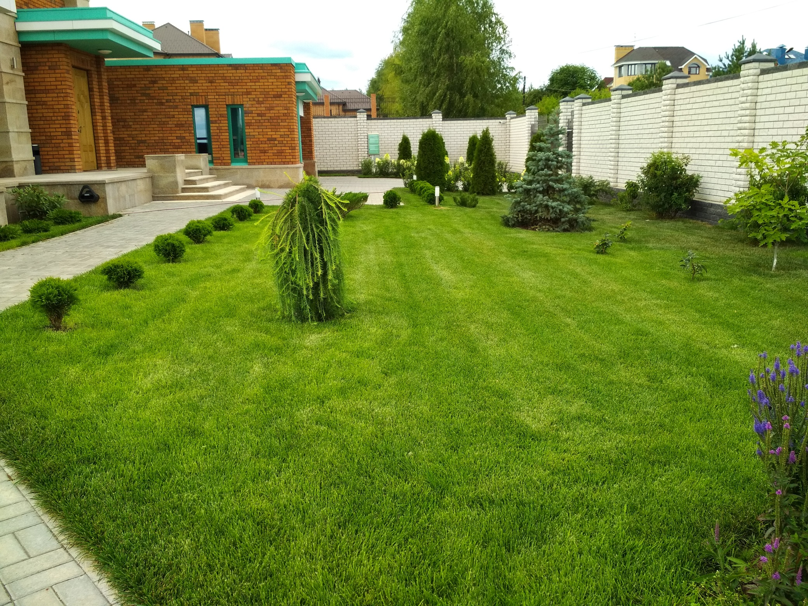
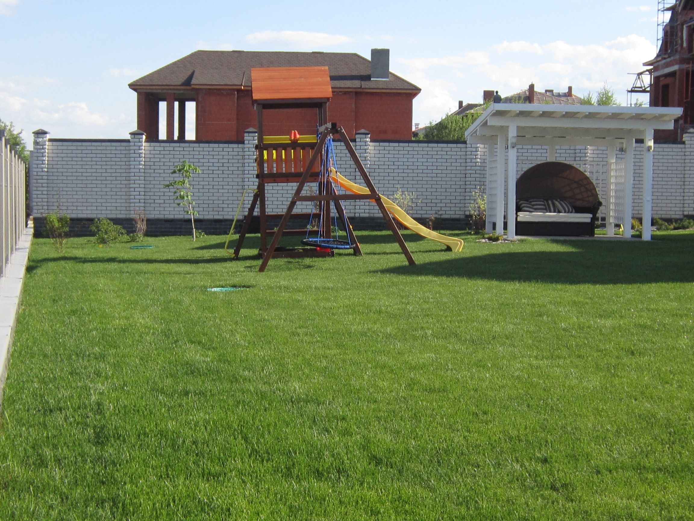
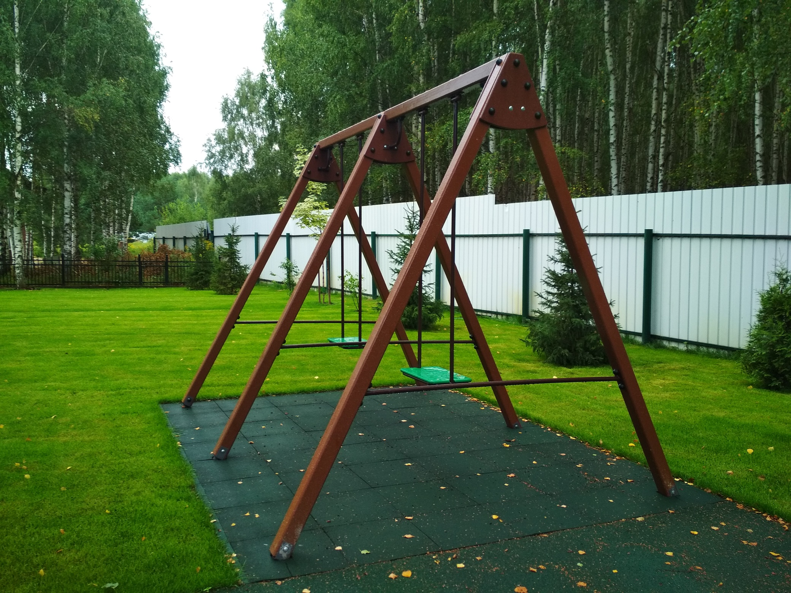

Строительная компания:
ООО «Аквастрой-НН»
Благоустройство
Подготовительные работы. Нивелирование территории, выравнивание участка.

Прежде чем приступить к благоустройству участка, необходимо провести ряд подготовительных мероприятий, таких как: очистка от пней и поросли, удаление мусора, планировка территории. Часть перечисленных работ можно произвести самостоятельно, однако к перемещению грунта лучше приступить заранее подготовившись!
Чтобы точно знать, куда какую землю завезти и в каком количестве мы предлагаем и разрабатываем Проект вертикальной планировки, в котором дизайнер анализирует все необходимые уклоны на вашем участке и рассчитывает, сколько нужно завезти песка, щебня, плодородной земли . Именно на этом этапе дизайнер сможет предложить вам различные варианты организации рельефа, чтобы на вашем участке не стояла вода. А самое важное- на этом этапе возможно просчитать будущие расходы на завоз грунта, что является весьма существенной статьей расходов при благоустройстве любого участка!
Итак, имея на руках проект вертикальной планировки, вам остается лишь доверить исполнение грамотным специалистам, которые будут аккуратно следовать плану. Ведь нет ничего хуже, когда Исполнитель конкретного объема работ вносит на свое усмотрение изменения в продуманный план, а в дальнейшем по этой причине Вы столкнетесь с массой незапланированных расходов!
Наша профессиональная бригада не только снимет все существующие уровни на вашем участке, а дизайнер разработает по ним проект вертикальной планировки! Далее мы выносим все точки на местность и по ним благоустраиваем ваш участок. Вы заранее видите, куда вам нужно завести плодородный грунт, а куда песок и щебень. Мы помогаем вам, а вы экономите деньги!
Устройство ливневой канализации и дренажа на участке

Примерно 50 % обращающихся к нам Заказчиков приходят с одной проблемой- образование луж на дорожках, отмостках, у заборов, крыльца. Такие ситуации случаются по двум причинам: неправильно организованному рельефу и отсутствия ливневой канализации на участке. Если устранить первую причину самостоятельно вам не удается, вы можете заказать у нас проект вертикальной планировки.
Что же такое ливневая канализация и можно ли ее устроить самостоятельно? Ливневая канализация представляет собой систему отведения ливневых и талых вод от загородного дома и прилегающей к нему территории. Как правило, устройство ее продиктовано зачастую больше эстетическими целями. Ведь куда приятней видеть сухие дорожки и ухоженные газоны, нежели лужи под водосточными трубами или проплешины от вымокания на траве.
Принцип работы ливневой канализации достаточно прост. Вода во время осадков направляется по водосточным трубам, желобам или воронкам с крыш домов в специальные дождеприёмники, оборудованные мусоросборными корзинами. Через
них вода поступает по системе труб в различные водоприемники. Это могут быть дренажные канавы вдоль дорог, дренажный колодец, овраг, водоем или
 даже канализация. Дело в том, что данная вода чистая, и она никоим образом не засоряет
окружающую среду. Мы просто направляем ее с застойных участков в открытые приемники. Часто хозяева загородного дома пытаются отвести ливневую воду открытыми бетонными лотками, которые однако не всегда справляются с потоком
и не обеспечивают должный водоотвод.
даже канализация. Дело в том, что данная вода чистая, и она никоим образом не засоряет
окружающую среду. Мы просто направляем ее с застойных участков в открытые приемники. Часто хозяева загородного дома пытаются отвести ливневую воду открытыми бетонными лотками, которые однако не всегда справляются с потоком
и не обеспечивают должный водоотвод.
Найти наиболее правильный вариант такого водоотведения поможет опытный специалист- инженер, который, проанализировав исходные данные (уровень грунтовых вод, тип почв, характер рельефа и прочие), разработает правильную и самую оптимальную по финансовым вложениям систему ливневой канализации. Также он проконсультирует вас о необходимости прокладки дренажа на участке в случае устройства подвала или подземного гаража, для профилактики гибели растений на участке при высоком уровне грунтовых вод, защиты фундамента от разрушения. В результате вы получите проработанный проект ливневой канализации и дренажа с анализом и просчетом необходимых уклонов для водоотведения воды и схемой проложенных труб и оборудования. Воплотить данную систему вам поможет наша опытная бригада - качественно, в короткие сроки, а главное- правильно!
Мощение на участке
Мы создаем организованное пространство, которое соответствует инженерным требованиям, обеспечивает условия для эффективного и естественного отвода с территории паводковых, ливневых и грунтовых вод. Формируем функциональные зоны, заложенные в проекте. Качественных и разнообразных материалов для мощения сейчас на рынке много!


Это различные по форме и цвету брусчатка, природный камень, резиновое покрытие или террасная доска.
Перед мощением проводим подготовительные работы: разметка будущей поверхности, уборка грунта и создание песчаной подушки, бетонирование с армированием.
Облицовочные работы
Облицовка, как мероприятие, позволяет одним махом решить сразу несколько задач:
• дополнительно защитить вертикальные поверхности от пагубного воздействия негативных погодных условий, химических и механических повреждений;
• кардинально преобразовать внешний вид собственного дома и участка, придав ему элегантности, привлекательности, аристократичности;
• восстановить внешний вид зданий и объектов, отреставрировать их.
Грамотно подобрать облицовочные материалы, выбрать фиксирующую смесь, по правилам уложить камень или плитку с учетом их дополнительной нагрузки – это задача, выполнить которую правильно можно только при наличии опыта и специальных знаний. В противном случае, вместо нескольких десятков лет, облицовка подпорных стенок или облицовка цоколя продержится до ближайшей зимы. Именно поэтому важно доверять облицовочные работы профессионалам.
Мы готовы создать дизайн, подобрать самый подходящий облицовочный материал и облицевать любую вертикальную поверхность, фасад, цоколь или подпорные стенки. В сотрудничестве с нами вы получите желаемый результат, который будет радовать вас долгие годы.
Автополив

Это сложная инженерная система, основные коммуникации которой проложены под землей. Потому ни вам, ни вашим гостям ее элементы никогда не помешают.
Наша система автополива полностью автоматическая и независимая. При ее формировании используем самые современные технологии. Система конструируется таким образом, чтобы обеспечить равномерный и качественный полив всем зеленым насаждениям территории. Наличие автополива является гарантией сохранности вашего сада.
Наша команда профессионалов выполнит проектирование, реализацию и пуско-наладочные работы. В конце сотрудничества вы получаете идеально функционирующую систему автополива, последующую поддержку и сервисное обслуживание.
Устройство газона
По методу устройства различают:
Газоны сеяные – когда смеси трав сеются на подготовленное место
Газоны рулонные – когда рулоны газона (дерна) укладываются на подготовленное место
Газоны создаются преимущественно посевом смеси семян многолетних травянистых растений (реже однолетних), подбираемых исходя из местных климатических условий и почв, а также исходя из целевого назначения газона и условий освещения.
Кроме посева газонных семян, в последние годы появился другой, более быстрый способ создать газон - настилка рулонного дерна , выращенного по специальной технологии в питомнике . Его главное преимущество перед сеяной лужайкой - возможность разбить газон в максимально короткие сроки.


Главное отличие зеленых лужаек друг от друга - видовой и сортовой состав злаковых трав, используемый для их создания. Несложно засеять семенами подготовленную площадку - важно правильно выбрать их смесь, чтобы она подходила для того или иного вида газона. И если отнестись к делу легкомысленно, можно испортить всю предварительную работу.
При покупке травосмеси не стоит соблазняться красивой картинкой на упаковке. Единственное , что заслуживает внимания - это аннотация.
Исходя из ваших желаний и намерений, вы можете создать газон очень дешево, долго и «грязно» с разносортностью видов растений; дороже, но за одно лето и намного чище; наконец, дорого, но за пару недель и почти идеально чисто – никаких сорняков. Важно учитывать не только средства и желания, но и разные виды экологичности газонов.
По назначению газоны различают:
Декоративные - предназначены для украшения приусадебной территории.
Функциональные - способные выполнять определенные задачи. Например, к спортивным относится газон футбольного поля или укрепляющие газоны высевают с целью укрепления откосов, склонов, задернения обочин дорог, пологих берегов водоемов.
Универсальные - относительно устойчивы к повреждениям и, в тоже время, достаточно декоративны.


По месторасположению газоны различают:
Газоны светолюбивые и теневыносливые. Важно использовать травосмеси, подходящие к данному типу участка. В состав смесей входят специфические подвиды, имеющие разные требования, сгруппированные по темпу роста и развития, различным реакциям на природные стрессы. Одни из них влаголюбивы и теневыносливы, и годятся для задернения сада и тенистых зон, другие засухоустойчивы и светолюбивы – для открытых площадок. Например, если на участке полутень, то надо высеивать травосмесь с преобладанием овсяницы красной или мятлика лесного.
Освещение.
В проектирование наружного освещения наша команда выполняет 3 основные задачи:
• Освещение площадок и функциональных зон.
• Защита от проникновения на участок.
• Эффектное декорирование вашего сада.
От правильной установки уличного освещения будет зависеть комфорт и безопасность нахождения на участке в ночное время. Для того чтобы выделить определенные элементы ландшафта, мы используем специальную точечную подсветку. Монтаж уличного освещения проводим с соблюдением существующих норм и правил.
Перед тем как приступить к установке и подключению уличного освещения, наши специалисты делают план всей системы, в котором учитывается не только количество фонарей и их расположение, но и мощность, высота размещения, сечение проводов, рельеф местности, способ монтажа, доступность электрической сети. Для совершения автоматического управления осветительной техникой используем электрощиты и пульты управления, они помогают более эффективно использовать оборудование в разных ситуациях. Особое внимание при установке наружного освещения мы уделяем качественной изоляции.
Устройство водоемов
Условно все искусственные водоемы можно разделить на декоративные и функциональные. К декоративным водоемам относятся пруды, каскады, ручейки, фонтаны, гроты и др. Главной задачей таких водоемов является преображение территории. Потому обычно они отличаются небольшими размерами. В то же время на территории можно обустроить и вполне функциональные водоемы – озера и больше пруды. Такие искусственные водоемы подходят для купания, разведения рыбы, их можно использовать для отвода ливневых вод в том случае, если нет другой возможности их отвести, вода из таких водоемов очень хорошо подходит для полива растений.
Технология создания прудов не так проста, как может показаться на первый взгляд. Ведь перед специалистами, как правило, стоит задача создать водоем в условиях, которые не подходят для этого из-за типа грунтов, специфики залегания подземных вод и многих других "невидимых " причин. Все эти тонкости, а также стилистика исполнения, его декоративное оформление прорабатываются в ходе проектирования и реализации водных объектов, поэтому пруды и водоемы, выполненные нашими специалистами всегда оцениваются на "Пять! "
Наша компания осуществляет устройство прудов, каскадов, ручьев и прочих водных объектов в точном соответствии с технологическими особенностями. Все элементы устройства – материалы, инженерные коммуникации, растительность – подбираются индивидуально для каждого участка, в соответствии с задачей, поставленной Заказчиком. Искусственные водоемы мы создаем по современным технологиям, используя экологически чистые материалы, которые безопасны для людей и окружающей среды. Созданные нами искусственные водоемы долговечны, требуют минимального ухода и гармонично вписываются в ваш мир, меняя его только в лучшую сторону.
Альпинарии и Рокарии
Между альпинарием и рокарием есть небольшое различие. Для устройства альпинария (альпийской горки) большую часть площади отводят для посадки растений, а меньшую часть занимают камни. При создании рокариев все наоборот - большую часть площади отводят для размещения камня, а меньшую часть занимают растения.
Главной задачей при формировании альпинария является максимально точное воспроизведение естественного горного пейзажа в миниатюре, в том числе и его растительного мира. Именно потому в альпинариях преобладают декоративные высокогорные растения, естественной средой произрастания которых являются высокогорные районы. Рокарий – это каменный сад, который обычно обустраивается там, где невозможно обустроить альпийскую горку. Но его эстетическая ценность и эмоциональность восприятия не уступают альпинарию. В рокарии допустимы только камни – из больших камней создаются основные объекты, а пространство между ними заполняется небольшим гравием или галькой.
Наша команда создает альпинарии и рокарии в соответствии с традиционными технологиями обустройства и философским подходом! Вопросом формирования рокариев и альпинариев в нашей компании занимаются наиболее талантливые и опытные дизайнеры, которым под силу сохранить и преумножить мудрость природы, воплощенную в этих особенных ландшафтных объектах.
Малые архитектурные формы
Существует огромное количество разных архитектурных форм, различных по форме, предназначению, размерам и материалам:
• скульптуры, статуи, изваяния, бюсты;
• вазы, вазоны и урны;
• садовые скамейки, перголы, беседки, столики;
• мостики и гроты;
• осветительные приборы;
• растительные скульптуры.
Посредством малых архитектурных форм можно решить множество задач ландшафтного дизайна:
• функциональные задачи (мостики, беседки, скамьи, урны для мусора);
• разделить сад на функциональные зоны (перголы, арки);
• достичь необходимого эстетического результата, поскольку обычно именно за счет таких элементов угадывается общее стилевое решение ландшафтного дизайна (вазоны, статуи);
• создать места для уединения и релаксации (шатры, гроты, садовые павильоны);
• грамотно расставить акценты в дизайне, скрыть одни моменты и подчеркнуть другие.
• создать определенное настроение в вашем саду или его части!
Мы не только предоставляем услуги по проектированию ландшафтного дизайна с использованием малых архитектурных форм, но и предоставляем возможность приобрести такие формы во всей широте представленного выше ассортимента видов и материалов.
Детские площадки
Мы сотрудничаем с отечественными производителями детских игровых комплексов, спортивных площадок, игрового оборудования, осуществляем продажу, а также монтаж данных комплексов.
Есть несколько правил, которые следует соблюдать тем, кто намеревается организовать на своем участке детскую площадку:
• площадку лучше расположить в солнечном, защищенном от сильного ветра месте;
• она должна просматриваться с того места, где присматривающий за ребенком находится большее количество времени (обычно это кухня или столовая);
• вокруг площадки категорически противопоказано высаживать колючие и ядовитые растения (шиповник, слива, барбарис, боярышник, волчеягодник, крыжовник, и т.п.), пространство площадки должно "проветриваться "; при слишком плотных посадках будет душно;
• покрытие площадки должно быть мягким и безопасным. Используют - песок, отсев, резиновое покрытие и т.п.
Мы создаем индивидуальную конфигурацию декоративных площадок для каждого отдельного клиента!


Экопарковки
Экопарковка – это совершенно новое, уникальное и, безусловно, полезное явление в современном ландшафте. Это эффективная, недорогая и практичная технология, преимущества которой абсолютно очевидны.
Экопарковка – это, по сути, обычный газон, но защищенный от продавливания и появления колей от постоянного движения автотранспорта. Защищается газон при помощи специальной газонной решетки, которая способна выдерживать значительные нагрузки и не препятствует росту газонной травы. Решетка располагается выше корневой системы растений, пропускает солнце, влагу и воздух. Она не мешает росту растений, а хорошая вентиляция препятствует возникновению нежелательных тепловых эффектов.
Строительство экопарковок требует точного соблюдения технологии, при которой важно использовать профессиональные материалы и добиться идеально ровной поверхности. Наша компания оказывает услуги по устройству экопарковок на профессиональном уровне. Мы используем расходные материалы высшего качества и точно следуем технологии формирования парковок такого плана.
Наверх